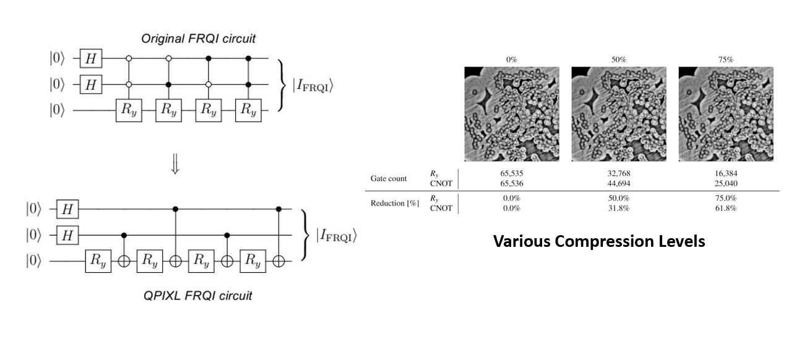
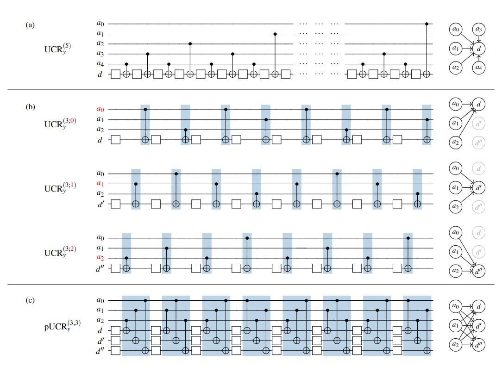
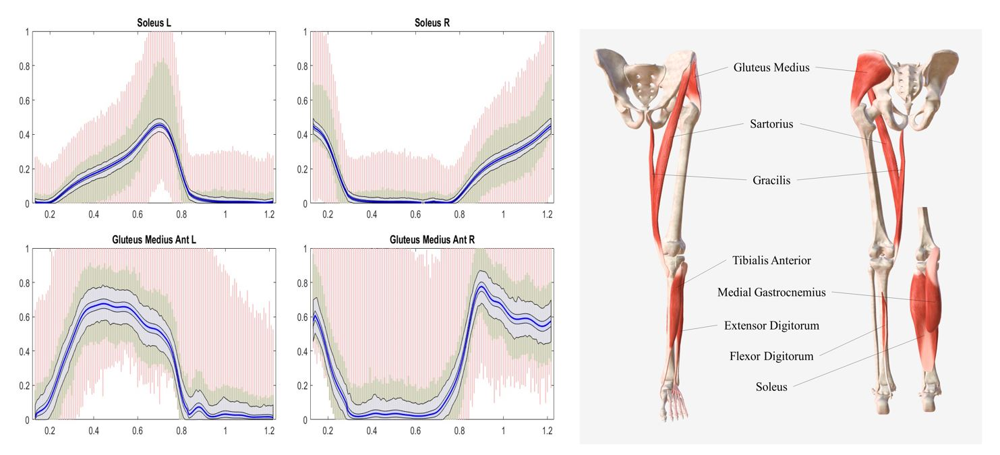

Projects
Quantum pixel representations and compression for N-dimensional images

Our experiments demonstrate that this compression algorithm can reduce the gate complexity by up to 90% without significantly compromising image quality.
An implementation of our algorithms is publicly available as part of the Quantum Image Pixel Library (QPIXL++), accessible at QPIXL++.
Quantum-parallel vectorized data encodings and computations on trapped-ion and transmon QPUs

MYOBOLICA : Muscle recruitment analysis tool based on Bayesian statistics techniques

Highlights
- We introduce a Bayesian approach to investigate muscle recruitment.
- Markov chain Monte Carlo (MCMC) is used to explore feasible solutions.
- Longitudinal priors ensure smooth activation trajectories.
- Potential applications include surgical planning and rehabilitation.